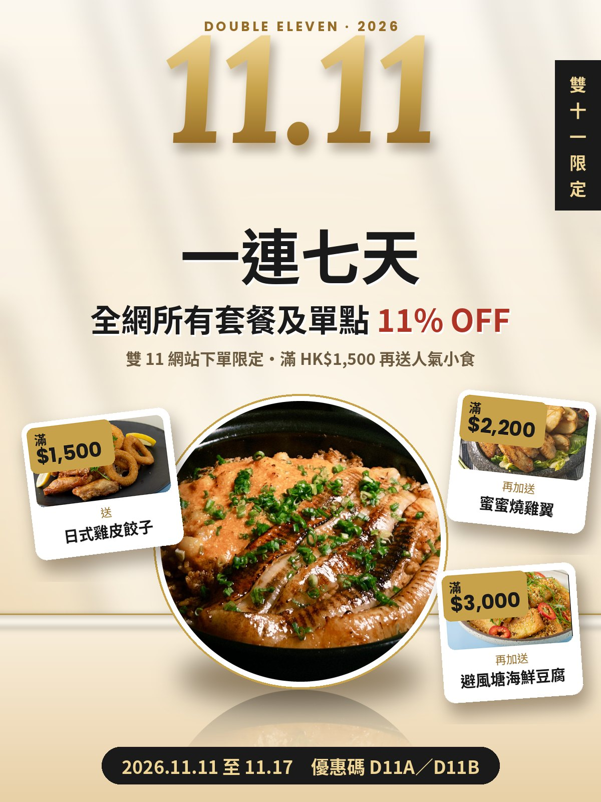
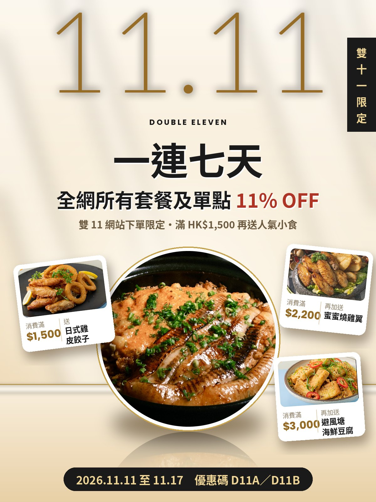
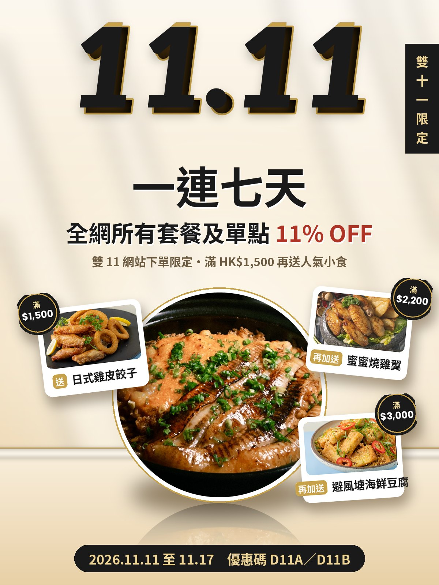

已刪除左上紅色 11% OFF 圓章，「一連七天」已去除左右線。11.11 字體及贈品卡可以自由配搭，例如方案 2 字體配方案 3 圓章。設計亦參考 Four Seasons Sydney 的留白及層次。
11.11 字體：Lora 粗斜體襯線，金色漸變加柔和陰影，上方加英文小標「DOUBLE ELEVEN · 2026」。最優雅，似酒店宣傳。
贈品卡：相片左上角貼金色價牌「滿 $1,500」，下面兩行：細字「送／再加送」，大字產品名。

11.11 字體：Lato Thin 超大幼字，金色加白色柔光，下面英文小標。最留白、最有 Four Seasons 感。
贈品卡：相片下面分兩欄：左邊「消費滿」加金色大字金額，中間細直線，右邊「送／再加送」加產品名。資訊最清楚。

11.11 字體：Lato 黑斜體，黑字加金色錯位描邊，頂部有金色反光線。最搶眼、最有節日感。
贈品卡：卡片右上角凸出一個黑金圓章「滿 $1,500」，下面金色「送」標籤加產品名。最有層次。
